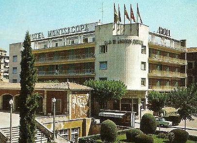
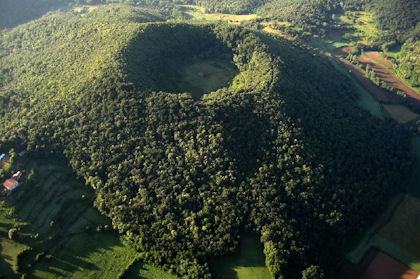
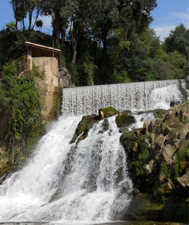
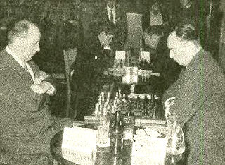
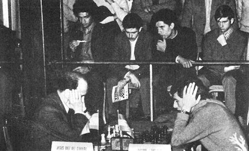

|
Pgn-Chess tournaments
in Olot
CB-file chess tournaments in Olot
Olot lies at the
Northeast of Spain near the French border. There are volcanoes
and waterfalls in the neighborhood. A series of ten closed
tournaments were organised by the Club de Ajedrez Olot.
Arturo and Carmen Pomar Salamanca ran a
post office in a village near Barcelona. It was 100 km south of Olot. Arturo participated in all events.
He never won, but he became second three times.
|
 |
 |
 |
| Hotel
Montsacapo, the tournament hall |
Volcano near
Olot |
Waterfall near Olot |
Installment one was
played by eight persons in Hotel Montsacopa (named after a
volcano) from 5 until 12 xii 1966. The Catalan event was won by
Pablo Garcia before Pomar. The Catalan initiative drew the
attention of the publisher Jorge Puig Laborda. He became the
director.
The second event happened soon. It was
played in the same hotel during March 1967. O'Kelly de Galway
won ahead of Medina Garcia.
The third tournament was played in Hotel
Montsacopa from 17 until 25 ii 1968. Participants were
Damjanovic, Lehmann, Tatai, Durao, Pomar Salamanca, Medina
Garcia and Fernandez. Local heroes from Olot were Parés, Bru and
Bosch. So it had become an international happening. Lehmann won.
The number of participants increased to ten. Tournament four and
five remained nice master events. A higher level started in 1971
and 1972. The great talent Ljubojevic won in 1972. Nona
Gaprindashvili participated in 1973 and the number of
participants became twelve. Adorjan won in 1974 and Csom in 1975.
|
 |
 |
 |
| Ulvestad -
O'Kelly de Galway 0-1, Olot 1969 |
Ulvestad,
O'Kelly and Ivkov in front. Young Ballon at the left and
Pomar in a hat (Olot 1969). |
Diez del Corral - Ljubojevic draw, Olot 1972 |
Winners of Olot
1966
Pedro Garcia
1967 O'Kelly de Galway
1968 Lehmann
1969 O'Kelly de Galway
1970 Westerinen |
1971 Hecht
1972 Ljubojevic
1973 Kurajica and Csom
1974 Adorjan
1975 Csom |
|